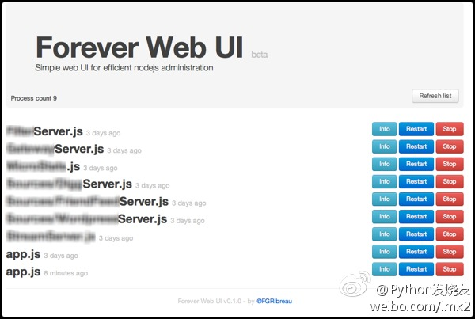

[nodejs]保证你的程序死了还能复活：forever and forever webui
forever
A simple CLI tool for ensuring that a given script runs continuously (i.e. forever). 一个非常简单的CLI工具，让你的程序持续运行。
安装forever: https://github.com/nodejitsu/forever
$ [sudo] npm install forever -g
Demo: 进程重启超过5次后将不再运行
$ forever examples/error-on-timer.js -m 5
forever-webui
A simple web UI for efficient nodejs administration 既然有了CLI工具帮忙保证程序的持续运行，那么有个简单的web监控就更加好了。 forever-webui 就是这样一个web应用程序。
安装并运行
$ npm install forever-webui && node node_modules/forever-webui/app.js
浏览器访问 http://127.0.0.1:8085

PS：如果你使用forever来启动forever-webui，还可以自己监控自己喔，不知道会不会死循环？！
有爱
^_^ 希望本文对你有用。